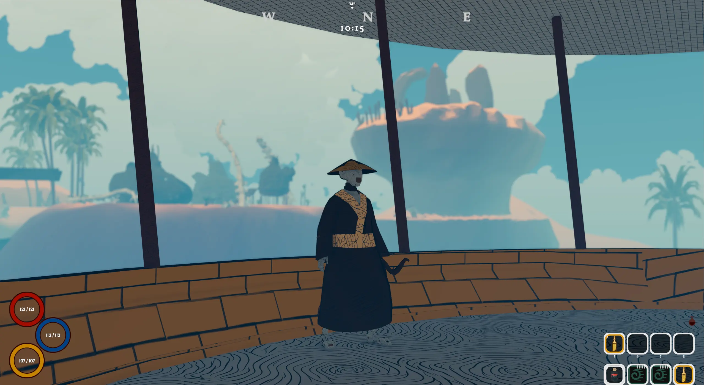
Pouště, zelené oblasti, močály a další biomy. Každá oblast představuje unikátní zážitek pro hráče. Některé slouží pouze jako průchody do těch dalších, jiné jako více patrové dungeony, ale nejdeme zde i velké města plné úkolů.
Vývoj her
Mekanum je sólově vyvíjené indie RPG inspirované klasickými rpg a survival tituly jako je Arcanum, Outward nebo Kenshi. Odehrává se v alternativní dystopické budoucnosti, kde se svět zasekl někde na přelomu viktoriánské éry a pozdějšího kolapsu civilizace. Technologie, magie, anomálie, frakce, náboženství i přežívající klany tu existují vedle sebe. Po dvou stech letech od pádu světa už nejde jen o otázku přežití, ale i o to, na čí stranu se postavíš: technologie, magie, nebo obojí.
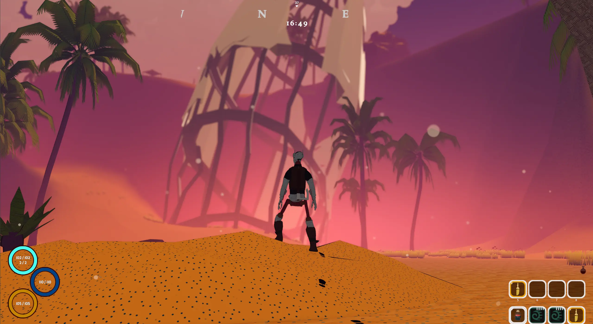
Procedurálně generovaná cestovní mapa je pro každého hráče individuální a přesto může být stejná. Generuje se totiž na základě jména tvojí postavy. Zde se můžeš podívat jak bude tvoje dobrodružství vypadat.

Pouště, zelené oblasti, močály a další biomy. Každá oblast představuje unikátní zážitek pro hráče. Některé slouží pouze jako průchody do těch dalších, jiné jako více patrové dungeony, ale nejdeme zde i velké města plné úkolů.
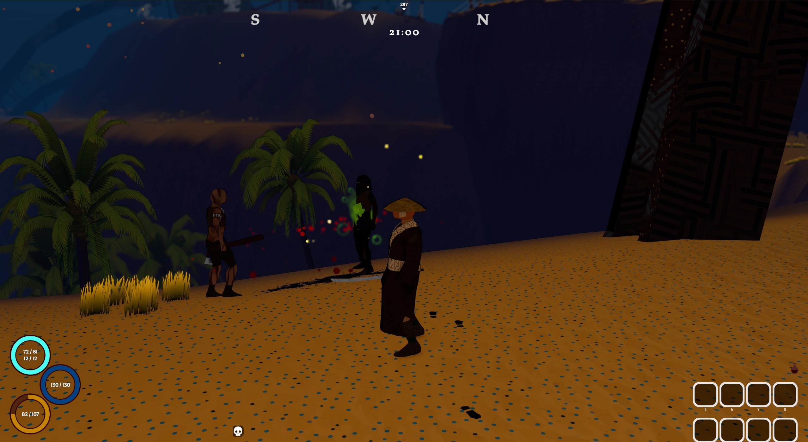
Ve hře je několik frakcí mezi nimiž panují velmi křehké, ale i někdy velmi napjaté vztahy. Hráč má svobodu se k frakcím přidávat a plnit pro ně úkoly.
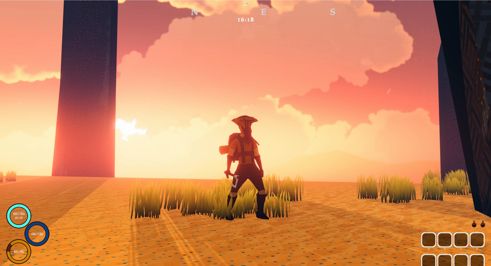
Příběh je důležitou součástí, ale zde si příběh vytváříš sám. Není tu jedna hlavní linka a pokud chceš, můžeš rovnou přeskočit do endgame.
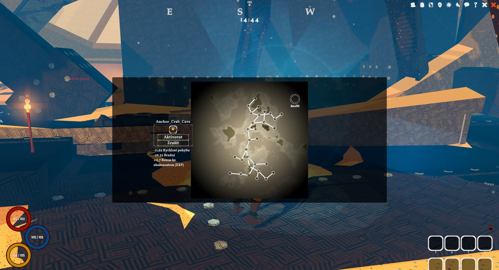
Endgame je navázán na kotevní atlas. Spouštění map pomocí vstupních klíčů je může várazně proměnit, ale stejně tak i tvoje schopnosti, nebo zisk za dokončení.
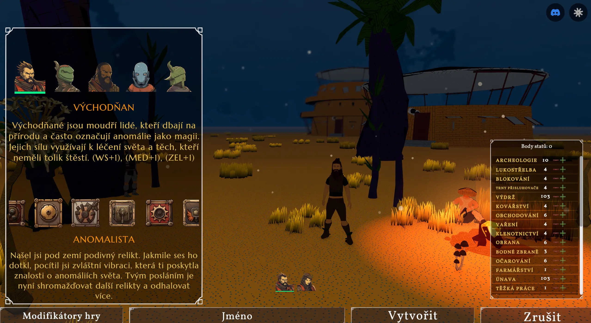
Mekanum je menší hrou, ale diverzita postav je naprostým základem, stejně tak, jak to máš rád u akčních RPG.
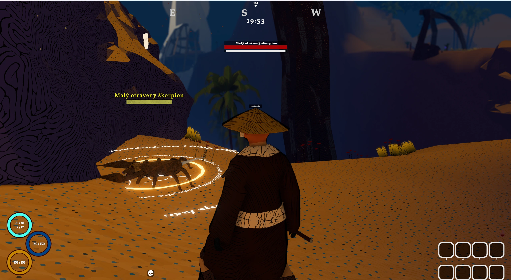
Soubojový systém spíše odpovídá ARPG, nečekej souls-like i když možnosti úhybu tu samozřejmě jsou. Celkově je souboj pomalejší, ale jen do chvíle, kdy na sobě nemáš extrémní výbavu.
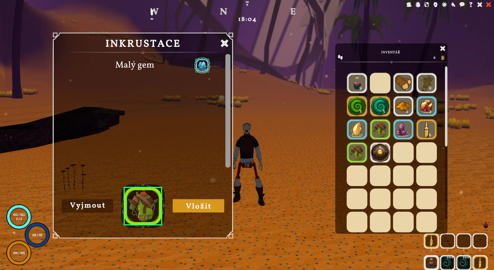
Crafting je velkou nutností, pramení z něj dost síly tvého charakteru. Ve hře najdeš runy, sety, unique itemy, augmentační orby, ale i třeba systém enchantů.
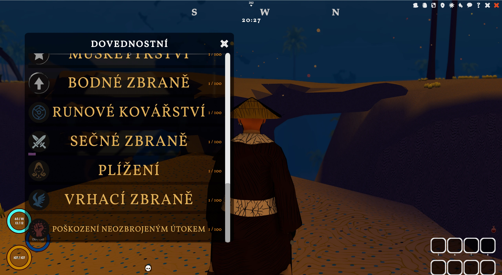
V rámci Early Accessu(Dema) bude ve hře dostupných zhruba 15 skillů. Tvoje postava se v nich zlepšuje podle toho, co ve světě dělá. Žádné nudné rozdělování bodů.
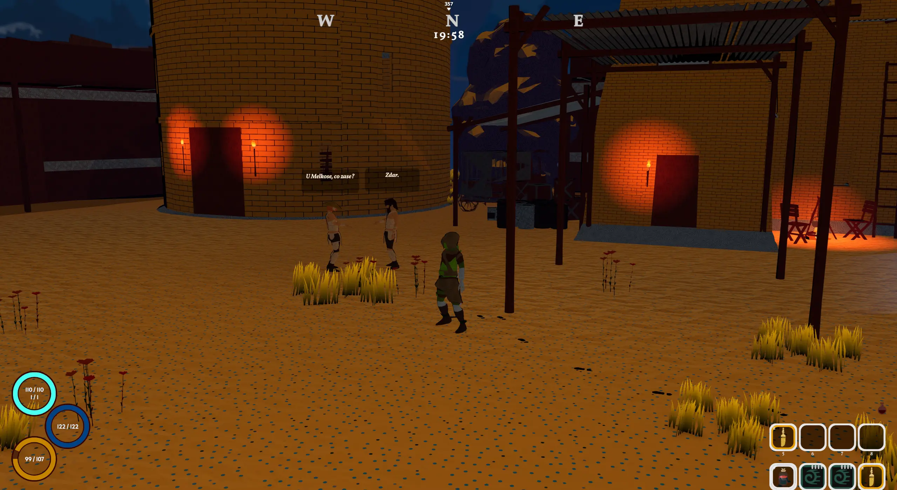
NPC ve hře mají simulovaný život. Reagují na tvůj útok, na počasí a nebo chodí pracovat. Někteří z nich, tě také můžou naučit speciální pasivní dovednosti. Pokud zabiješ důležité NPC, máš smůlu.
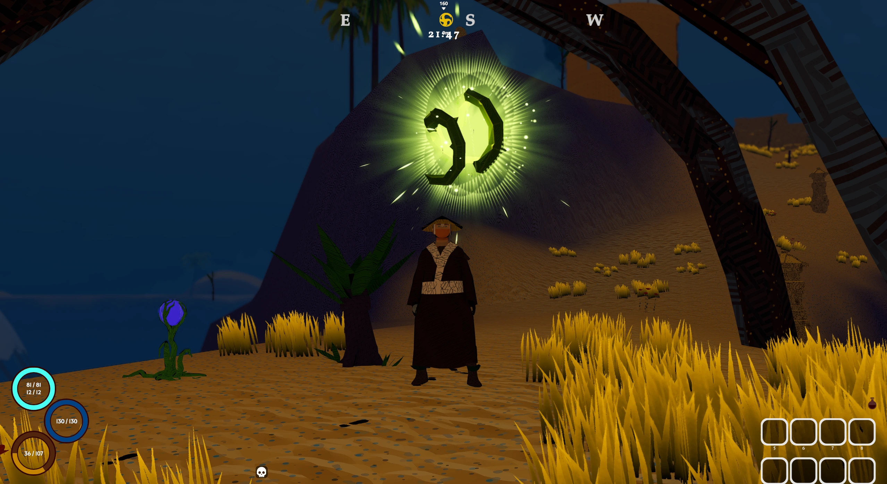
Anomálie ve světě vytvářejí velký rozkol. Odvážní se ale můžou pokusit je chytit a využít jako unikátní systém magie, či craftingu.
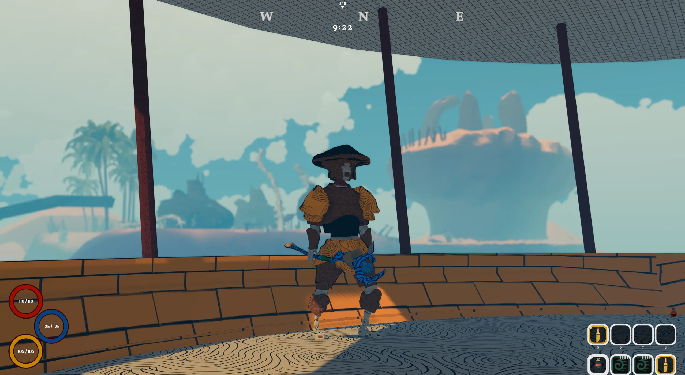
Hudba bude tvořena s pomocí profesionálního tvůrce Filipa Stejskala. Některé soundtracky dočasně používáme ze zakoupených assetů. Hudba je bezpečná pro podklad videí na recenze.
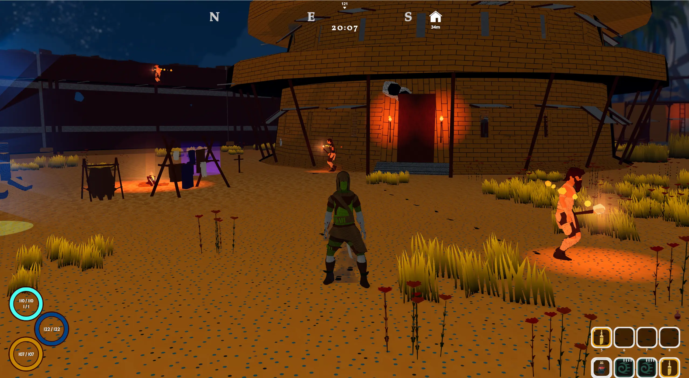
Building systém byl původní součástí hry. Nyní se zjednodušil na vylepšování hráčského domu a možnosti zakoupit domy nové.
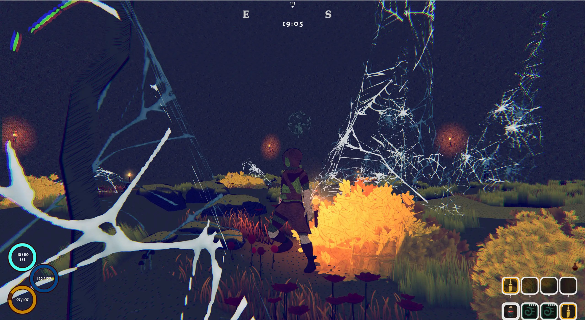
V plné verzi hry je plánováno více systémů, od mountů, přes přes "sezónní" eventové updaty (bez resetu postav a postupu), až po systém úpravy charakteru.
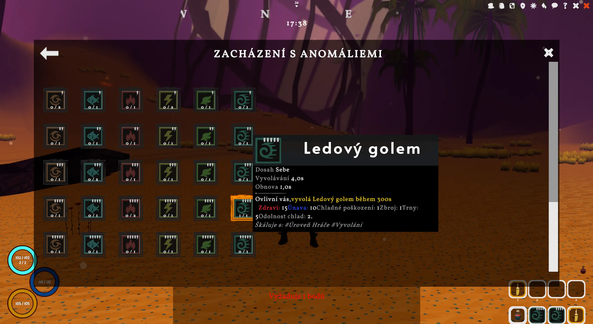
Práce je pořád obrovské množství. Vývoj pokračuje sólo. Vydání dema není přesně stanoveno. V blízké budoucnosti spustím sérii dev blogů, a devlog videí.
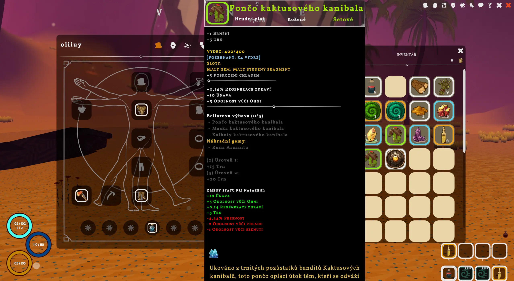
Neustále pracuji na nových systémech itemizace a zábavnosti. Je ale stále potřeba vytvářet velké množství variablity od modelů až po mechaniky.
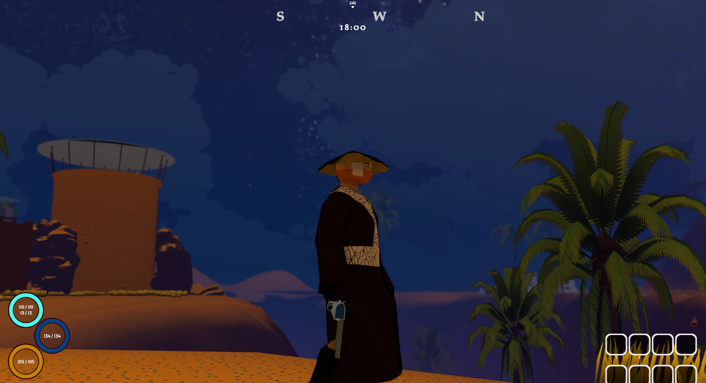
Multiplayer zatím není v plánu. Hra na to není připravena a autor taky ne. Zvažuji alternativní možnosti, jako žebříčky nebo peer-to-peer trading předmětů přes Steam.
Je to osobní projekt silně inspirovaný RPG jako Kenshi, Outward nebo Arcanum. Cílem je svět s vlastním lore, silnou komunitou a prostorem pro budoucí modding. Nemusí být za každou cenu unikátní, hlavně musí být zábavná.
Frakce, náhodné statistiky předmětů, náhodní nepřátelé s již plně funkční systémem elitních monster, permadeath mód (již funkční) nebo generované dungeony a generovaná mapa. Důležité je, aby každé hraní nabízelo trochu jiný průběh.
Zatím není stále definitivně rozhodnuto. Po finálním vydání ale spíš počítám s menším jednorázovým nákupem přes Steam. Cenovka bude nejspíše do 10 euro.
Používám Unity 2026 LTS. Část vývoje stojí i na assetech jako Open Source - RPG Builder od Blink Studia. Grafiku, modely i shadery si ale dělám sám a vlastní mechaniky postupně dopisuji. Pomáhá mi také AI. Je to škoda, ale bez toho by to nevzniklo.
Zatím ne. Ale první lokace, napojení na steam, ovládání přes gamepad, nebo UI je plně funkční. Systémově je hra také téměř kompletní. Chybí doplnit obsah, questy a vyladit zábavnost.
Aktivně teď nehledám tým ani vydavatele. Pokud máš ale zájem, můžeš mi napsat přes kontakty na webu. Programování i zvuk jsou pořád oblasti, kde mám největší rezervy.
Na webu vycházejí blog posty se štítkem Mekanum(historický název hry) a průběžné novinky dávám i na Discord, kde je komunikace osobnější. Chystám sérii videí na youtube.